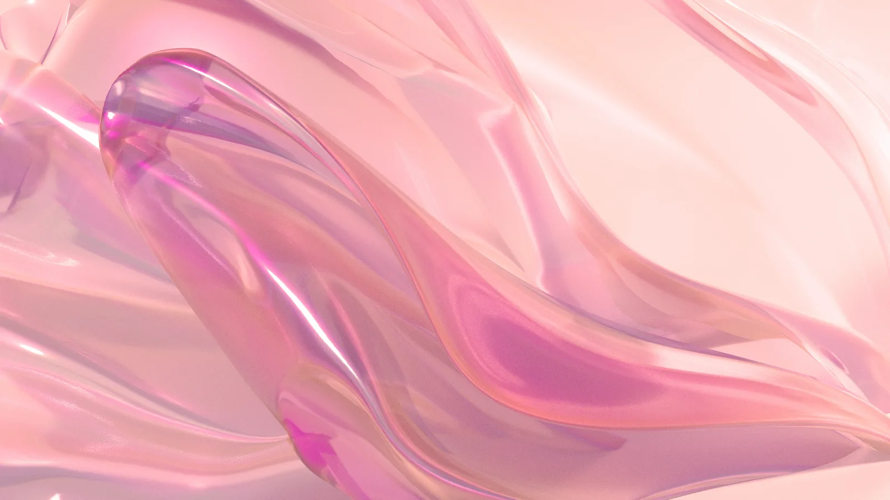

YIQI
首页
特效
HoneyBear
Horse
Alice
动画
Overpower
Hedwig
建模
Apple
OSL
程序化建筑（Houdini）
客制化建筑（Maya）
灯光／合成
灯光
工具
Idle
Unreal
程序化材质
Substance Designer → Substance Painter → Unreal Engine
关于
博客
部落格 × Special Project | PART2
部落格 × Special Project | PART1
部落格 × Harbour × ETC
部落格 × Harbour
部落格 × VSFX728
EN
繁
简
← 博客
SCAD x HARBOUR x ETC
以下是这次合作十周的进度纪录。

第 1 周
第 2 周
第 3 周
第 4 周
第 5 周
第 6 周
第 7 周
第 8 周
第 9 周
第 10 周